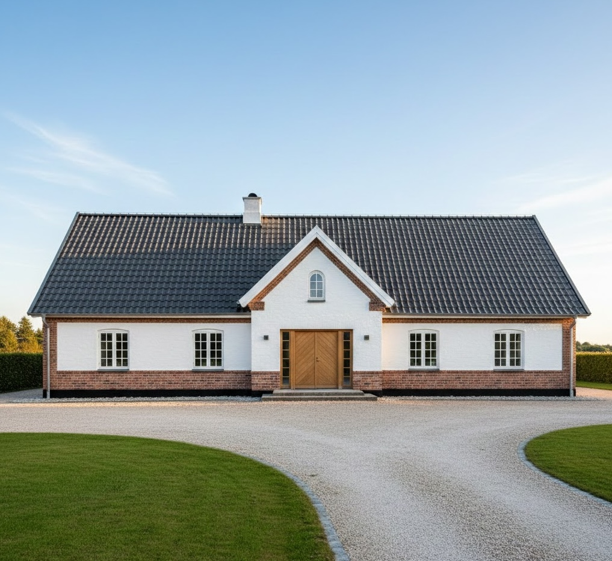
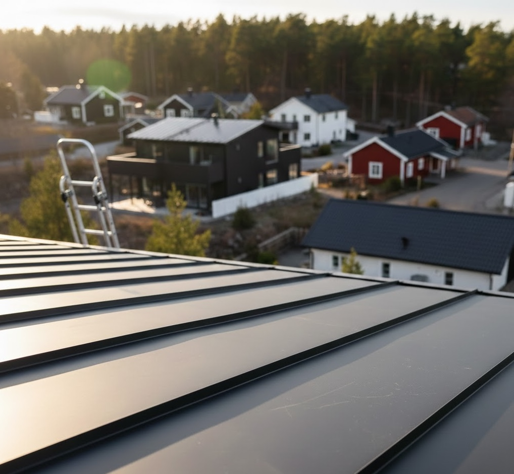
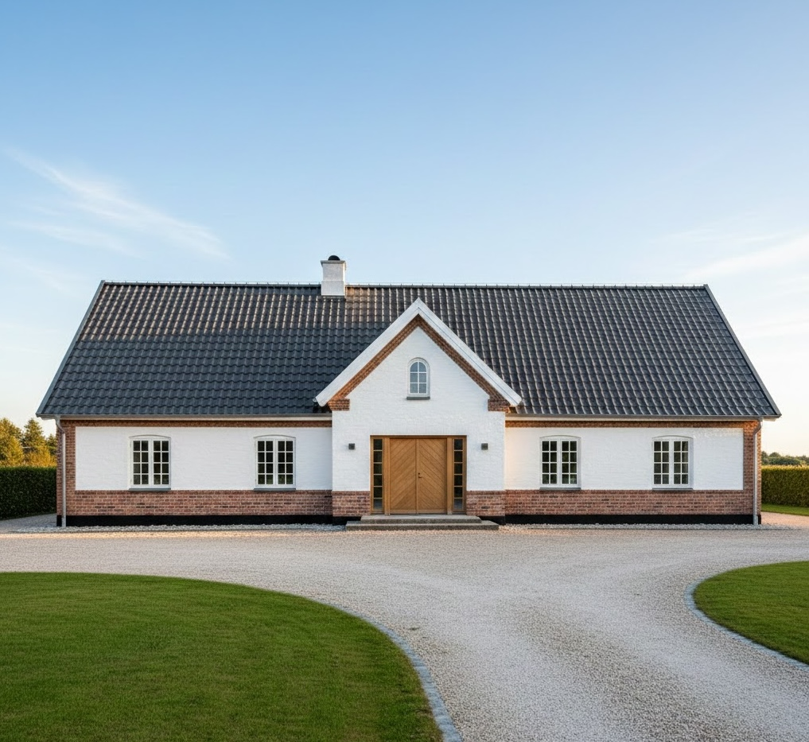
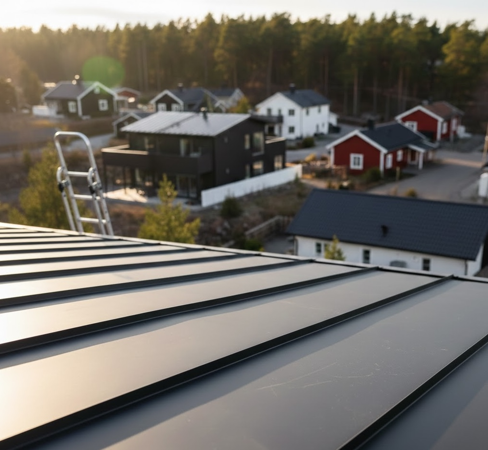

Takpannor som håller i generationer
Takpannor är ett val för framtiden – klassisk skönhet kombinerat med moderna material. Vi installerar med precision så att ditt hem får ett tak som både skyddar och förgyller i årtionden.
Taket som gör huset klart
Ett bra tak ska ge en känsla direkt: tryggt, genomtänkt och byggt för att hålla. Takpannor är valet när du vill att huset ska se färdigt ut — och fortsätta kännas rätt i många år.
Ser bra ut från första dagen
Takpannor ger huset en tydlig silhuett och en klassisk helhet som passar både nya och äldre villor.
Du märker det när vädret slår om
När det blåser, regnar eller snöar ska du slippa fundera. Takpannor är en stabil lösning som gör jobbet i bakgrunden.
Ett val du inte behöver göra om
Det här är inte en trend. Det är en långsiktig uppgradering som stärker helhetsintrycket och värdet över tid.

 



Fem Fördelar Med Takpannor
Varför takpannor är ett smart val för långsiktiga villaägare som vill kombinera skönhet med praktik.
Klassisk Estetik Som Aldrig Dateras
Takpannor har använts i hundratals år och kommer att vara vackra i hundratals år till. Det är en design som alltid är aktuell och som höjer hela husets estetik och karaktär.
Enorm Livslängd – 50+ År Utan Problem
Moderna takpannor håller 50-60 år eller mer. Det betyder färre byten under din tid som villaägare och långtidssäkerhet för din familj och egendom.
Utmärkt Väderresistans & Tätethet
Takpannor är designade för att stå emot regn, snö och ekstrem värme. Den överlappande konstruktionen skapar en naturlig tätethet som skyddar ditt hus under alla väderförhållanden.
Enkelt Underhåll & Låga Kostnader
Takpannor kräver minimal underhållning. En gång var tionde år eller när behov är kan du göra enkla inspektioner. Kostnaderna för underhållning är mycket låga jämfört med andra taktyper.
Flexibel Design & Varianter
Takpannor finns i många färger och stilar. Du kan välja klassiskt rött, modernt mörkrött, svart eller andra nyanser som passar din husstil och dina önskemål perfekt.
Allt Du Behöver Veta Om Takpannor
Vanliga frågor och svar om takpannor, installation, underhållning och kostnader.
Hur länge håller takpannor egentligen?
Moderna takpannor från välkända tillverkare håller typiskt 50-60 år eller längre, ofta utan större reparationer. Med rätt installation och grundläggande underhållning kan du förvänta dig många decenniers tillförlitlig tjänst. Det gör takpannor till en väldigt långsiktig investering som ofta överlever själva huset i kvalitet och funktion.
Vilka är de vanligaste taktyperna av takpannor?
De två huvudtyperna är spansk (rundad) och nederländsk takpanna. Spanska pannor är runda och klassiska, medan nederländska är mer rektangulära och moderna. Det finns också franska pannor och många moderna varianter. Vi hjälper dig att välja den stil som passar ditt hus bäst, både estetiskt och praktiskt.
Hur mycket kostar en takpannatakning?
Kostnaden beror på takets storlek, lutning och tillgänglighet. Takpannor ligger mellan plåttak och traditionell papptak när det gäller pris. Vi erbjuder alltid en kostnadsfri offert efter en hembesöksbesiktning. Du får en transparent prisberäkning utan dolda avgifter eller överraskningar senare.
Behöver takpannor mycket underhållning?
Nej, takpannor kräver mycket mindre underhållning än många andra taktyper. En enkel granskning vart tionde år räcker för de flesta hus. Du bör kontrollera efter kraftiga stormar eller långa perioder med mycket snö. Grundläggande rengöring av takrännor är det viktigaste – vi rekommenderar detta två gånger per år.
Kan jag behålla mina gamla takpannor eller måste jag byta?
Det beror på tillståndet. Om pannorna är intakta kan de ofta återanvändas, vilket sparar både pengar och miljön. Vi inspekterar grundligt vid hembesöket för att fastställa om gammla pannor kan återanvändas eller om nya är nödvändiga. Ofta kan vi blanda gamla och nya pannor på ett sätt som ser naturligt ut.
Redo för ett vackrare tak?
Kontakta oss idag för en kostnadsfri inspektion och offert. Vi återkommer snabbt – personligt och professionellt.
Boka ditt kostnadsfria hembesök